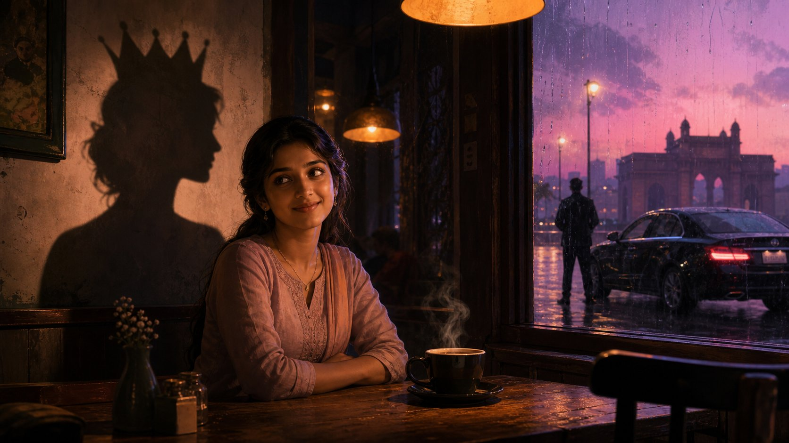
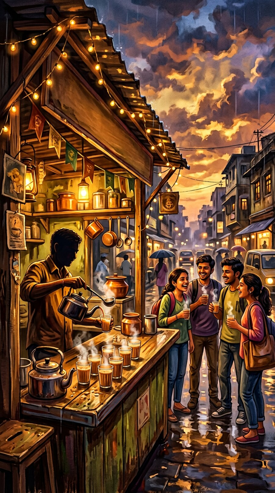
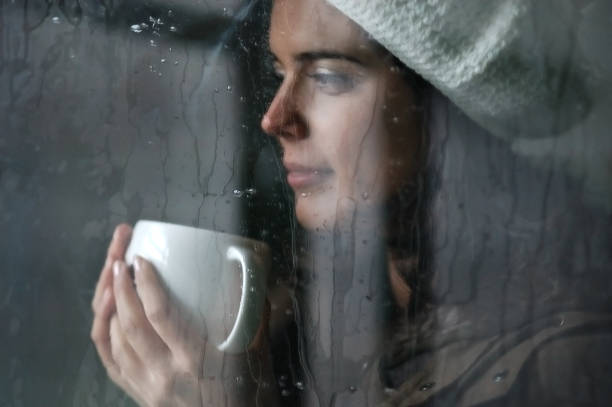
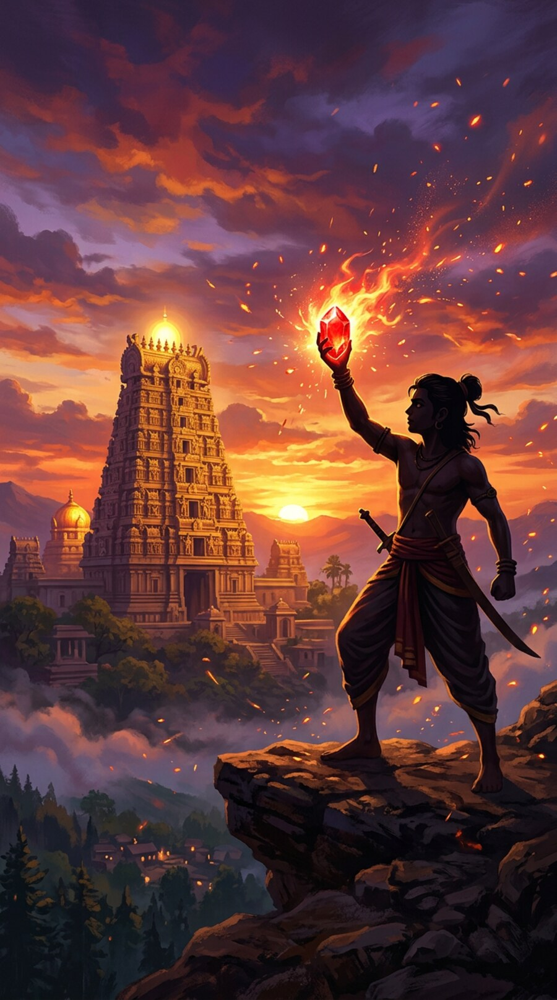
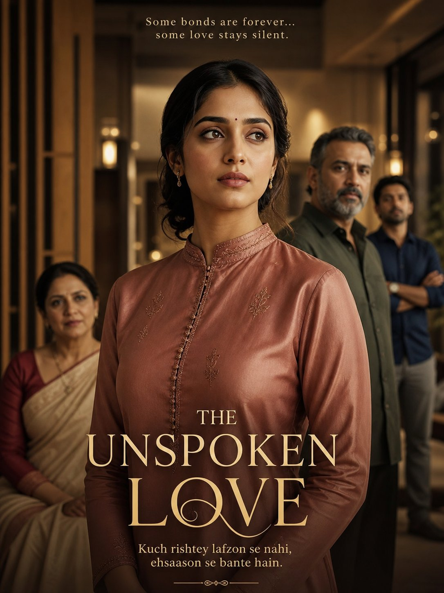

Visual acceptance — natural aspect ratios
Real bundled artwork, rendered with the app's post-fix layout math. Check each tile against its labelled source dimensions.
Final rule: IMAGE RATIO = SOURCE IMAGE RATIO — no forced 16:9, 4:3, 3:4 or 1:1;
no crop, no stretch, no fixed image height. Bounded viewers use contain (letterbox), never cover-crop.
Featured story (hero)

ROMANCE12–17
Cafe Queen Myra
1672 × 941 — displayed at its own 16:9-class ratio ✓
source 1672×941 (1.777) → hero height derives from the cover, not a fixed 252 px
Continue story (64 px thumbs)

Chai Dreams
1024 × 1536 → thumb keeps 2:3

Alishaa
612 × 407 → landscape thumb keeps 3:2

Aakhri Yodha
900 × 1613 → tall thumb keeps 0.558
Grid rail (158 px cards)

Bhabi Ka Ladla Devar
1086×1448 → 3:4 ✓
Cafe Queen Myra
1672×941 → 16:9 ✓
Aakhri Yodha
900×1613 → 0.558 ✓
Media gallery (masonry, own ratios)
COVER16:9 kept
PORTRAIT3:4 kept
SCENE2:3 kept
MEDIA3:2 kept
 SCENE4:3 kept
SCENE4:3 kept MEDIA1:1 kept
MEDIA1:1 keptMixed source ratios in one gallery — every tile keeps its own shape. No forced 3:4.
Lightbox (bounded contain)
900 × 1613 — taller than the bound → letterboxed by contain, not cropped
Bounded viewers (lightbox, hero) contain-fit: the artwork's ratio is preserved exactly.